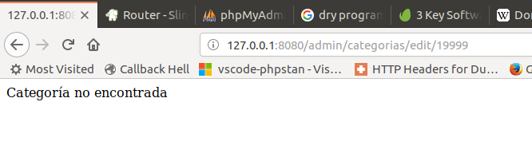
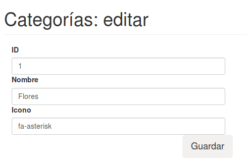
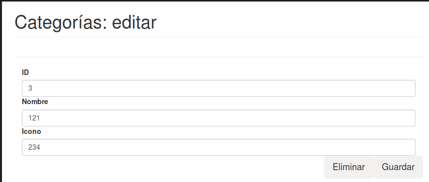
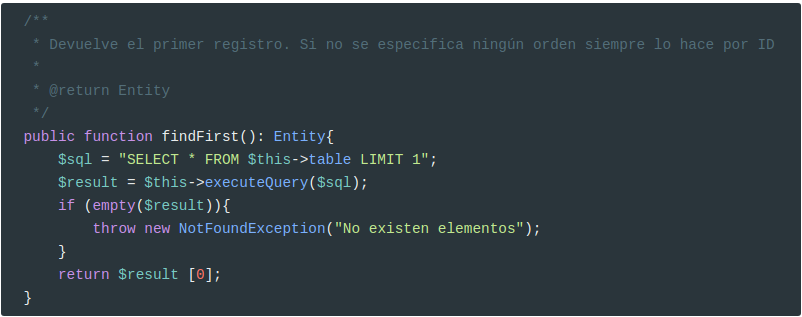
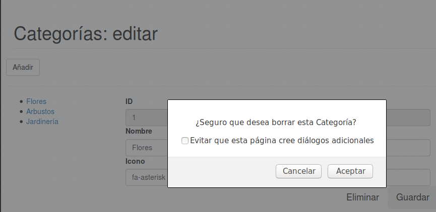
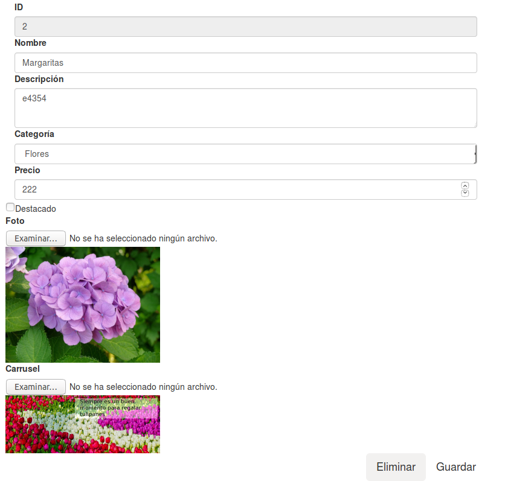

Categorías
Vamos a realizar un mantenimiento de la tabla categorias, que nos permita realizar operaciones CRUD (Create, Read, Update, Delete).
Create

El primer paso es crear la entidad Category y el repositorio CategoryRepository.
Ahora ya podemos empezar con el controlador. Pero antes de empezar vamos a cambiar el método home
xxxxxxxxxxpublic function home($request, $response, $args) { $pageheader = "Categorías"; return $response->write($pageheader); //return $this->container->renderer->render($response, "categorias.view.php", compact('pageheader'));}Porque vamos a ir haciendo cambios en la vista categorias.view.php y no quiero modificar este método hasta que estén hechos el resto de controladores (ya veréis por qué)
A continuación creamos la nueva ruta en el controlador frontal public/admin/index.php
xxxxxxxxxx$app->map(['GET', 'POST'], '/categorias/new', CategoryController::class . ':add') ->setName('categoria-nueva');Y creamos el método add en CategoryController:
Novedades
Mensajes Flash
En este método vamos a ver el uso de mensajes Flash en la línea 34 (esos que una vez se leen se auto-destruyen)
Para usar mensajes Flash hemos de instalar este componente:
xxxxxxxxxxcomposer require slim/flashY ahora configurarlo en el controlador frontal:
xxxxxxxxxx<?php//...use \Slim\Flash\Messages;//...$container['flash'] = function () { return new Messages();};$templateVariables = [ "basePath" => $container->request->getUri()->getBasePath(), "formInfo" => $container->flash->getMessage('formInfo')[0]];//..Fijaos en $container->flash->getMessage('formInfo')[0]: tiene como clave la que hemos creado en la línea 34 del script anterior.
Este cambio supone también que modifiquemos /app/views/admin/partials/show-messages.part.php
xxxxxxxxxx<?php if (!empty($formInfo)) : ?><div class="alert alert-info alert-dismissible" role="alert"> <button type="button" class="close" data-dismiss="alert" aria-label="Close"> <span aria-hidden="true">x</span> </button> <div><?=$formInfo;?></div></div><?php endif;?><?php if("POST" === $_SERVER["REQUEST_METHOD"] && $form->hasError()) :?> <div class="alert alert-danger alert-dismissible" role="alert"> <button type="button" class="close" data-dismiss="alert" aria-label="Close"> <span aria-hidden="true">x</span> </button> <ul> <?php foreach($form->getErrors() as $error) : ?> <li><?=$error;?></li> <?php endforeach;?> </ul> </div><?php endif;?>Modificar la vista categorias.view.php para incluir el formulario:
xxxxxxxxxx<?php include __DIR__ . "/partials/inicio-doc.part.php";?><div class="row"> <div class="col-lg-6"> <?php include __DIR__ . "/partials/show-messages.part.php"; ?> <?=$form->render();?> </div></div> <?php include __DIR__ . "/partials/fin-doc.part.php";?>Redirecciones
En la línea 35, hacemos una redirección: de momento es a la misma ruta, pero cuando acabemos todos los controladores, redirigirá a /admin/edit.
Update
IMPORTANTE: Modificad el constructor de cada Entidad. Debe quedar como en el siguiente ejemplo:
xxxxxxxxxxpublic function __construct(int $id = null, string $nombre = '', string $icon = ''){$this->id = $id;$this->nombre = $nombre;$this->icon = $icon;}Es decir, como primer parámetro se pasa el valor del id.
Por tanto, modificad la línea 31 del método add:
xxxxxxxxxx$categoria = new Category(null, $nombre->getValue(), $icon->getValue());
El formulario para editar una categoría, va a ser muy parecido al de crear una nueva. La única diferencia es que mostrará el ID y los campos estarán informados.
Para no tener que hacer el formulario dos veces, vamos a crear una función que nos devuelva el mismo.
DRY Principle: Don't Repeat Yourself
Pero antes de empezar, hemos de modificar ProyectoWeb\utils\Forms\CompoundElement para añadir un método que nos devuelva todos sus descendientes:
/**
* Devuelve todos los descendientes del componente
*
* @return array
*/
public function getDescendants(): array{
$descendants = $this->children;
foreach ($this->getChildren() as $child) {
if (is_subclass_of($child, "ProyectoWeb\utils\Forms\CompoundElement")) {
$descendants = array_merge($descendants, $child->getDescendants());
}
}
return $descendants;
}
Y también, modificamos ProyectoWeb\utils\Forms\FormElement para añadir un método que nos devuelva todos los campos del formulario:
/**
* Devuelve todos los elementos del formulario
*
* @return array
*/
public function getFormElements() : array {
$descendants = $this->getDescendants();
$dataDescendants = [];
foreach ($descendants as $descendant) {
if (is_subclass_of($descendant, "ProyectoWeb\utils\Forms\DataElement")) {
if (!empty($descendant->getName())) {
$dataDescendants[$descendant->getName()] = $descendant;
}
}
}
return $dataDescendants;
}
Y ahora podemos modificar la clase CategoryController, añadiendo un método que nos genere el formulario:
/**
* Genera el formulario para el mantenimiento de las categorías
*
* @return FormElement
*/
private function getForm(): FormElement {
$nombre = new InputElement('text');
$nombre
->setName('nombre')
->setId('nombre')
->setValidator(new NotEmptyValidator('El nombre es obligatorio', true));
$nombreWrapper = new MyFormControl($nombre, 'Nombre', 'col-xs-12');
$icon = new InputElement('text');
$icon
->setName('icon')
->setId('icon')
->setValidator(new NotEmptyValidator('El icono es obligatorio', true));
$iconWrapper = new MyFormControl($icon, 'Icono', 'col-xs-12');
$b = new ButtonElement('Guardar');
$b->setCssClass('pull-right btn btn-lg sr-button');
$form = new FormElement($this->container->router->pathFor('categoria-nueva'));
$form
->setCssClass('form-horizontal')
->appendChild($nombreWrapper)
->appendChild($iconWrapper)
->appendChild($b);
return $form;
}
Y ahora modificamos add() para que llame a este método:
public function add($request, $response, $args) {
$pageheader = "Categorías: nueva";
$form = $this->getForm();
$formElements = $form->getFormElements();
$repositorio = new CategoryRepository();
if ("POST" === $_SERVER["REQUEST_METHOD"]) {
$form->validate();
if (!$form->hasError()) {
try {
$categoria = new Category(null, $formElements['nombre']->getValue(), $formElements['icon']->getValue());
//...
//Código anterior
}
catch(Exception $err) {
$form->addError($err->getMessage());
}
}
}
return $this->container->renderer->render($response, "categorias.view.php", compact('pageheader', 'form'));
}
Fijaos en:
$formElements = $form->getFormElements();
Y en:
$categoria = new Category(
null,
$formElements['nombre']->getValue(),
$formElements['icon']->getValue());
Ahora ya podemos hacer el controlador para editar una categoría existente.
Crear la ruta
El primer paso es crear la ruta:
$app->map(['GET', 'POST'],
'/categorias/edit/{id:[0-9]+}',
CategoryController::class . ':edit')->setName('edit-category');
En este caso estamos creando un parámetro (parecido a un átomo de Apache) {id:[0-9]+}. El nombre de este parámetro es idy tiene asociado el regex [0-9]+.
Controlador
Vamos a crear el controlador para esta nueva ruta:
public function edit($request, $response, $args) {
$id = $args['id'];
$pageheader = "Categorías: editar $id";
return $response->write($pageheader);
}
También podemos usar la función extract() que produce el mismo resultado.
public function edit($request, $response, $args) {
extract($args);
$pageheader = "Categorías: editar $id";
return $response->write($pageheader);
}

Formulario
Ahora ya podemos empezar con la lógica del formulario.
El primer paso será comprobar que la categoría pasada como parámetro existe:
$repositorio = new CategoryRepository();
try {
$categoria = $repositorio->findById($id);
}catch(NotFoundException $nfe) {
return $response->write("Categoría no encontrada");
}
Si probamos con una categoría inexistente, este será el resultado:

En otro caso, mostramos el formulario usando el método getForm(). Pero hay que modificarlo, porque no muestra el campo ID, ni los datos de la categoría. Por tanto:
private function getForm(Category $categoria = null): FormElement {
$nombre = new InputElement('text');
$nombre
->setName('nombre')
->setId('nombre')
->setValidator(new NotEmptyValidator('El nombre es obligatorio', true));
$nombreWrapper = new MyFormControl($nombre, 'Nombre', 'col-xs-12');
$icon = new InputElement('text');
$icon
->setName('icon')
->setId('icon')
->setValidator(new NotEmptyValidator('El icono es obligatorio', true));
$iconWrapper = new MyFormControl($icon, 'Icono', 'col-xs-12');
$b = new ButtonElement('Guardar');
$b->setCssClass('pull-right btn btn-lg');
if (!is_null($categoria)) {
$id = new InputElement('text');
$id
->setName('id')
->setId('id');
$idWrapper = new MyFormControl($id, 'ID', 'col-xs-12');
$id->setDefaultValue($categoria->getId());
$nombre->setDefaultValue($categoria->getNombre());
$icon->setDefaultValue($categoria->getIcon());
$form = new FormElement(
$this->container->router->pathFor('edit-category',
['id' => $categoria->getId()])
);
$form->appendChild($idWrapper);
} else {
$form = new FormElement($this->container->router->pathFor('new-category'));
}
$form->setCssClass('form-horizontal');
$form
->appendChild($nombreWrapper)
->appendChild($iconWrapper)
->appendChild($b);
return $form;
}
Si le pasamos una Categoría, creamos el campo ID, informamos los campos y la action del formulario es:
$this->container->router->pathFor('edit-category',
['id' => $categoria->getId()])
Como la ruta edit-categorytiene un parámetro, hemos de pasarlo al método pathFor. Tantas parejas clave => valor como tenga la ruta.
Ahora ya podemos unirlo todo:

Campo ID no editable
Como podéis observar, el campo ID se puede editar por el usuario. Para que no pueda hacerlo, debe tener el atributo readonly
<input name="id" value="1" id="id" class="form-control" readonly="" type="text">
Así que modificamos Element para que pueda tener atributos:
protected $attributes;
public function __construct()
{
$this->attributes = [];
}
//Resto de métodos
public function setAttribute(string $key, string $value) {
$this->attributes[$key] = $value;
}
protected function renderAttributes(): string
{
$html = (!empty($this->id) ? " id='$this->id' " : '');
$html .= (!empty($this->cssClass) ? " class='$this->cssClass' " : '');
$html .= (!empty($this->style) ? " style='$this->style' " : '');
foreach($this->attributes as $key => $value) {
$html .= " $key=\"$value\" ";
}
return $html;
}
Se me olvidó llamar al constructor del padre en DataElemtent, por lo también hay que modificarlo:
public function __construct()
{
$this->donePostValue = false;
$this->errors = [];
parent::__construct();
}
Por último modificamos el método getForm de CategoryController:
if (!is_null($categoria)) {
$id = new InputElement('text');
$id
->setName('id')
->setId('id')
->setAttribute('readonly', '');
IMPORTANTE: Que sea
readonlyno significa que el usuario no lo pueda cambiar! En un entorno real, debemos tener presente esto y controlar de alguna forma que este valor no haya sido cambiado por el usuario. Por ejemplo, se puede poner un campo oculto con el ID encriptado simétricamente. Además, generalmente se creartokenspara los formularios mediante algún algoritmo de hash para proteger nuestro sitio de ataques de tipo CSRF
Cambiar redirect en new
Ahora que ya podemos editar una categoría, vamos a hacer que al grabar una nueva nos redirija al modo editar de la misma.

Aquí vemos un concepto nuevo:
¿Cómo sabemos qué ID ha autogenerado para la nueva categoría?: usando el método lastInsertId() de la conexión.
$categoria->setId(App::get('connection')->lastInsertId());
Cuidado: No en todos los SGDB se obtiene de esta manera el valor del id autogenerado. Por ejemplo, en Oracle y PostgreSQL se hace de otra forma. Pero en MySql y MariaDB se hace así.
Ahora ya podemos redireccionar correctamente:
return $response->withRedirect(
$this->container->router->pathFor('edit-category',
['id' => $categoria->getId()]), 303);
Delete
En la pantalla para Editar una categoría, añadimos un nuevo botón para eliminarla:
Pero para ello, hay que añadir un nuevo método a QueryBuilder.
public function delete(Entity $entity)
{
try{
$sql = "DELETE FROM $this->table WHERE id = :id";
$statement = $this->connection->prepare($sql);
$statement->execute(['id' => $entity->getId()]);
}catch (\PDOException $exception){
throw new QueryException("Error al eliminar en la base de datos. " . $exception->getMessage());
}
}

Pero ahora tenemos un formulario con dos botones: ¿Cómo sabemos en qué botón ha hecho clic el usuario?
Para solucionarlo, añadimos un nuevo método a ButtonElement:
/**
* Devuelve true si éste ha sido el botón enviado con el formulario
*
* @return boolean
*/
public function isSubmitted(): bool {
if (empty($this->name)) {
return false;
}
return (isset($_POST[$this->name]));
}
Fijaos que aunque el formulario tenga dos botones, al pulsar Eliminar estos son los dados que envía el navegador:

De esta forma podemos discriminar la acción elegida por el usuario.
Modificamos el método getForm() para añadir el botón para Eliminar:
if (!is_null($categoria)) {
$id = new InputElement('text');
$id
->setName('id')
->setId('id');
$idWrapper = new MyFormControl($id, 'ID', 'col-xs-12');
$buttonDelete = new ButtonElement('Eliminar');
$buttonDelete
->setId('delete');
->setName('delete');
$buttonDelete->setCssClass('pull-right btn btn-lg');
$id->setDefaultValue($categoria->getId());
$nombre->setDefaultValue($categoria->getNombre());
$icon->setDefaultValue($categoria->getIcon());
$form = new FormElement($this->container->router->pathFor('edit-category', ['id' => $categoria->getId()]));
$form->appendChild($idWrapper);
} else {
$form = new FormElement($this->container->router->pathFor('new-category'));
}
$form->setCssClass('form-horizontal');
$form
->appendChild($nombreWrapper)
->appendChild($iconWrapper)
->appendChild($b);
if (!is_null($categoria)) {
$form->appendChild($buttonDelete);
}
Para que funcione hay que asignarle un name al botón:
$buttonDelete->setName('delete');
Ya sólo nos falta modificar el método edit para poder eliminar la categoría.
if ("POST" === $_SERVER["REQUEST_METHOD"]) {
$form->validate();
if ($formElements['delete']->isSubmitted()) {
try {
$repositorio->delete($categoria);
return $response->write('Categoría eliminada correctamente');
}catch(QueryException $qe) {
//Luego la tratamos
}
}
//resto de código
Retoques finales
Lista de categorías
Ahora mismo no tenemos una lista de las categorías existentes por lo que nuestra aplicación todavía no es funcional.
Vamos a añadir un menú con todas las categorías existentes.
Primero modificamos la vista categorias.view.php
<?php
include __DIR__ . "/partials/inicio-doc.part.php";
?>
<div class="row">
<div class="col-lg-2">
<ul>
<?php foreach($categorias as $categoria) :?>
<li><a href='<?=$router->pathFor('edit-category', ['id' => $categoria->getId()])?>'><?=$categoria->getNombre();?></a></li>
<?php endforeach; ?>
</ul>
</div>
<div class="col-lg-6">
<?php
include __DIR__ . "/partials/show-messages.part.php";
?>
<?=$form->render();?>
</div>
</div>
<?php
include __DIR__ . "/partials/fin-doc.part.php";
?>
Fijaos que usamos las variables $categorias y $router.
La variable $categorias la informaremos en los dos métodos add y edit, llamando a
$categorias = $repositorio->findAll();
Y se la pasaremos como un parámetro a la plantilla:
return $this->container->renderer->render($response, "categorias.view.php", compact('pageheader', 'form', 'categorias'));
Sin embargo, el $router vamos a hacerlo global para todas las plantillas de /admin.
Por tanto, en el controlador frontal:
$templateVariables = [
"basePath" => $container->request->getUri()->getBasePath(),
"formInfo" => $container->flash->getMessage('formInfo')[0],
"router" => $container->router
];
Ahora ya podemos tener una lista con las categorías:

Botón Añadir
En este momento no tenemos ninguna opción para añadir Categorías.
Como antes, modificamos la plantilla.
<?php
include __DIR__ . "/partials/inicio-doc.part.php";
?>
<div class="row">
<a class='btn btn-default' href='<?=$router->pathFor('new-category');?>'>Añadir</a>
<hr>
//Resto de la plantilla

Página de inicio
En estos momentos, cuando el usuario hace clic en Categorías en el menú se muestra la siguiente ventana:

Pero haremos lo siguiente:
- Si hay alguna categoría, mostraremos la primera en modo Edición
- Si no hay ninguna, mostraremos el formulario para añadir una nueva
Para saber si existe alguna, creamos el método findFirst en QueryBuilder:

Y ahora ya podemos completar el método home en CategoryController

Redirigir al eliminar
Ahora al eliminar un elemento, redirigimos a la página /categorias

Confirmación al eliminar
Siempre que se elimina un elemento, se debe pedir confirmación.

Para ello, modificamos la vista fin-doc.part.php para incluir un pequeño javascript.
<script src="<?=$basePath;?>/js/plugins/morris/morris-data.js"></script>
<script>
function checkDelete(){
//Siempre que una acción no se pueda deshacer hay que pedir confirmación al usuario
if (confirm("¿Seguro que desea borrar este elemento?"))
return true;
else
return false;
}
</script>
Y ahora, le añadimos un evento onclic al botón.
$buttonDelete
->setId('delete')
->setName('delete')
->setAttribute('onclick', "return checkDelete();");
NOTA En una aplicación real, tal vez usemos una ventana modal y no esta que nos muestra el navegador por defecto. Además el script no debería ser
inlinesino estar empaquetado en un fichero.js
Productos
FileElement
En este caso no encontramos conque los campos File no pueden estar nunca vacíos porque hacemos la comprobación en el propio elemento y no en un validador. Por tanto, hemos de modificar un poco FileElement::validate, pasando de :
case UPLOAD_ERR_NO_FILE:
$this->errors[] = 'Debes seleccionar un fichero';
break;
a:
case UPLOAD_ERR_NO_FILE:
break;
De esta forma conseguimos que se pueda enviar un File vacío. Pero ahora hace falta un nuevo validador, que llamaremos FileNotEmptyValidator:
<?php
namespace ProyectoWeb\utils\Validator;
use ProyectoWeb\utils\Validator\Validator;
class FileNotEmptyValidator extends Validator {
public function doValidate(): bool{
$ok = ($this->data["error"] === UPLOAD_ERR_OK);
if (!$ok) {
$this->errors[] = $this->message;
}
return $ok;
}
}
Y por último hemos de modificar un poco MimetypeValidator:
public function doValidate(): bool{
$ok = true;
if ($this->data["error"] === UPLOAD_ERR_OK) {
$ok = in_array($this->data["type"], $this->mimeTypes);
}
if (!$ok) {
$this->errors[] = $this->message;
}
return $ok;
}
Y MaxSizeValidator:
public function doValidate(): bool{
$ok = true;
if ($this->data["error"] === UPLOAD_ERR_OK) {
$ok = !(($this->maxSize > 0) && ($this->data['size'] > $this->maxSize));
}
if (!$ok) {
$this->errors[] = $this->message;
}
return $ok;
}
Ahora ya podemos crear campos File que sean opcionales.
Formulario
Para crear el formulario, hemos de hacer que el campo File sea opcional en el caso de que estamos editando un elemento en el caso de la Foto. Y el carrusel siempre va a ser opcional.
//getForm()
$foto = new FileElement();
$foto
->setName('foto')
->setId('foto');
if (!is_null($producto)) {
$fv = new MimetypeValidator(['image/jpeg', 'image/jpg', 'image/png'], 'Formato no soportado', true);
} else {
$fv = new FileNotEmptyValidator('La foto no puede estar vacía', true);
$fv->setNextValidator(new MimetypeValidator(['image/jpeg', 'image/jpg', 'image/png'], 'Formato no soportado', true));
}
$foto->setValidator($fv);
$labelFoto = new LabelElement('Foto', $foto);
$labelFoto->setStyle('display:block');
$carrusel = new FileElement();
$carrusel
->setName('carrusel')
->setId('carrusel')
->setValidator(new MimetypeValidator(['image/jpeg', 'image/jpg', 'image/png'], 'Formato no soportado', true));
$labelCarrusel = new LabelElement('Carrusel', $carrusel);
Ahora falta modificar el método add:
$foto = $formElements['foto'];
$foto->saveUploadedFile(APP::get('rootDir') . Product::RUTA_IMAGENES);
// Create a new SimpleImage object
$simpleImage = new \claviska\SimpleImage();
$simpleImage
->fromFile(APP::get('rootDir') . Product::RUTA_IMAGENES . $foto->getFileName())
->resize(600)
->toFile(APP::get('rootDir') . Product::RUTA_IMAGENES . '600_' . $foto->getFileName())
->resize(256)
->toFile(APP::get('rootDir') . Product::RUTA_IMAGENES . '256_' . $foto->getFileName());
//El carrusel puede estar vacío
$carrusel = $formElements['carrusel'];
if (!empty($carrusel->getFileName())) {
$carrusel->saveUploadedFile(APP::get('rootDir') . Product::RUTA_IMAGENES_CARRUSEL);
$simpleImage
->fromFile(APP::get('rootDir') . Product::RUTA_IMAGENES . $foto->getFileName())
->resize(800, 300)
->toFile(APP::get('rootDir') . Product::RUTA_IMAGENES_CARRUSEL . $foto->getFileName());
}
$producto = new Product(null, $formElements['nombre']->getValue(),
$formElements['descripcion']->getValue(),
$formElements['categoria']->getValue(),
$formElements['precio']->getValue(),
$formElements['foto']->getFileName(),
($formElements['destacado']->isChecked() ? 1: 0),
$formElements['carrusel']->getFileName());
$repositorio->save($producto);
Y el método edit. Es similar a add, pero en el caso de que el campo File esté vacío, guardamos el valor anterior:
$simpleImage = new \claviska\SimpleImage();
$foto = $formElements['foto'];
if (!empty($foto->getFileName())) {
$foto->saveUploadedFile(APP::get('rootDir') . Product::RUTA_IMAGENES);
$simpleImage
->fromFile(APP::get('rootDir') . Product::RUTA_IMAGENES . $foto->getFileName())
->resize(600)
->toFile(APP::get('rootDir') . Product::RUTA_IMAGENES . '600_' . $foto->getFileName())
->resize(256)
->toFile(APP::get('rootDir') . Product::RUTA_IMAGENES . '256_' . $foto->getFileName());
}
$carrusel = $formElements['carrusel'];
if (!empty($carrusel->getFileName())) {
$carrusel->saveUploadedFile(APP::get('rootDir') . Product::RUTA_IMAGENES_CARRUSEL);
$simpleImage
->fromFile(APP::get('rootDir') . Product::RUTA_IMAGENES_CARRUSEL . $carrusel->getFileName())
->resize(800, 300)
->toFile(APP::get('rootDir') . Product::RUTA_IMAGENES_CARRUSEL . $carrusel->getFileName());
}
$producto = new Product($formElements['id']->getValue(),
$formElements['nombre']->getValue(),
$formElements['descripcion']->getValue(),
$formElements['categoria']->getValue(),
$formElements['precio']->getValue(),
!empty($foto->getFileName()) ? $formElements['foto']->getFileName() : $producto->getFoto(),
($formElements['destacado']->isChecked()? 1: 0),
!empty($carrusel->getFileName()) ? $formElements['carrusel']->getFileName() : $producto->getCarrusel());
$repositorio->update($producto);
Imágenes
Además, nos interesa que cuando estamos editando un producto aparezcan las imágenes que tiene el mismo. Para ello, hace falta crear un nuevo elemento para el formulario: ImgElement
<?php
namespace ProyectoWeb\utils\Forms;
use ProyectoWeb\utils\Forms\Element;
class ImgElement extends Element
{
/**
* @var string
*/
private $src;
/**
* @var string
*/
private $alt;
/**
* @var string
*/
private $title;
public function __construct(string $src, string $alt = '', string $title = '')
{
$this->src = $src;
$this->alt = $alt;
$this->title = $title;
parent::__construct();
}
public function render(): string
{
$html =
"<img src='" . $this->src . "' alt='" . $this->alt . "' title='" . $this->title . "' " .
$this->renderAttributes() .
">";
return $html;
}
}
Y ahora sólo nos hace falta añadir las imágenes al formulario:
if (!is_null($producto)) {
//resto de código
$imgFoto = new ImgElement(Product::RUTA_IMAGENES . '256_'. $producto->getFoto());
$imgFoto->setStyle('display:block');
if (!empty($producto->getCarrusel())) {
$imgCarrusel = new ImgElement(Product::RUTA_IMAGENES_CARRUSEL . $producto->getCarrusel());
$imgCarrusel->setStyle('width:256px; display:block');
}
//...

Destacado
Por último falta tratar el campo destacado. Por un lado, hemos de guardar 1 cuando el campo es true y 0 cuando es false. Por otro lado, cuando el valor es 1 lo hemos de mostrar chequeado y cuando es 0 no.
Por tanto, en getForm():
xxxxxxxxxxif (!is_null($producto)) { $destacado = new CheckboxElement("Destacado", $producto->getDestacado() == 1 ? true: false); $destacado ->setName("destacado") ->setDefaultValue("1"); //resto de código} else { $destacado = new CheckboxElement("Destacado", false); $destacado ->setName("destacado") ->setDefaultValue("1"); $form = new FormElement($this->container->router->pathFor('new-product'), 'multipart/form-data');} Y al guardar, tanto en add como en edit:
xxxxxxxxxx ($formElements['destacado']->isChecked() ? 1: 0),Credits.
Víctor Ponz victorponz@gmail.com
Este material está licenciado bajo una licencia Creative Commons, Attribution-NonCommercial-ShareAlike